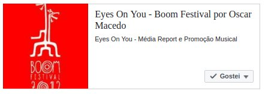

Facebook Concept Proof for Artist Promotion made by Boom Festival
In the Year 2016 - World Wide Shamanic Call

Boom Festival - World Wide Target ( Portugal )
A litle bit about me and Boom Festival
At 2012 I had my unique experience in this festival.
I remember I wrote a note about my experience, but sadly I lost that note.
Who knows if Boom Festival save it...
In any case, I can tell you one single thing.
I pass my life listening Classic Music and Heavy Metal,
ignoring all beats of Electronic Dance Music,
while I was in a deep need to make music,
the only way would be to do it alone.
I always love Bruce Lee, while he always Love as well Philosophy...
If you wish to read more about my activity in Facebook
Be sure You Log In, or simply read it, without login In, and naturally search for "OdicforceSounds" ;)
Click here to go back to "Emotional Signals" album